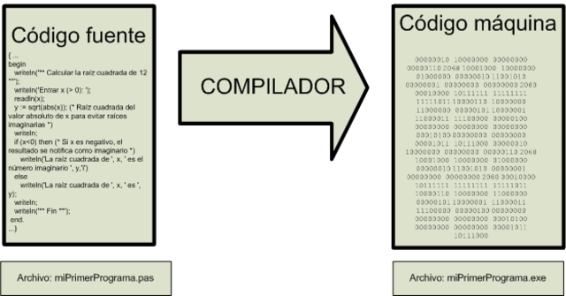

¿Qué hace un compilador?
Un compilador es como un traductor. El compilador se encarga de tranformar un programa escrito en un lenguaje en otro formato o lenguaje.
De forma general el compilador se encarga de traducir un codigo en lenguaje de alto nivel al lenguaje de maquina.
Además existen varios tipos de compiladores:
- Compiladores de varias pasadas
- Compiladores de una pasada
- Optimizadores
- Compiladores JIT(Just In Time)
Partes de un compilador
-
Analizador Léxico
Trabaja a petición del analizador sintactico, se encarga de reconcer identifiadores, palabras clave y constantes, agrupando estas expresiones en "fichas" o tokens.
-
Analizador Sintáctico
Esta fase inicia si el analizador léxico no detecto errores, el analizador lexico se encarga de construir frases verificando que el lenguaje cumpla con las especificaciones que necesita el compilador.
-
Analizador Semántico
Se encarga de determinar si los componentes se usan correctamente de acuerdo al contexto en donde aparecen, es decir se trata de una etapa de verificación que da paso a la generación de código.
-
Generador De Código Intermedio
Se encarga de recibir un arbol de sintaxis anodado, apartir del cual se crea una representacion lineal. El código intermedio es independiente de la maquina y aprovecha todo el almacenamiento de la maquina para generar el codigo.
-
Optimizacion De Código
Es un proceso que se encarga de la transformación de un fragmento de código en otro trozo con una funcionalidad equivalente buscando mejorar caracteristicas como la velocidad y el tamaño del código.
-
Generador de Código
Es la última etapa cuyo proposito es traducir el código de alto nivel en uno de bajo nivel o viceversa. Los compiladores tambien pueden funcionar como traductores y generar código en otros lenguajes a partir de uno diferente.

Analizador Léxico a detalle
La fase de análisis léxico en un compilador, convierte un flujo de caracteres en un flujo de tokens. En esta fase tambien se descarta espacios en blanco y comentarios en el código.
Para esta fase el analizador lexico utiliza una conjunto de herramientas y reglas que permiten identificar los tokens de mejor manera. Por ejemplo el uso de las expresiones regulares permite identificar tokens como numeros enteros y cadenas de caracteres. Mientras que las reglas son expresiones que definen los distintos tipos de tokens. En resumen el analizador lexico se encarga de indenticar tokens y errores lexicos dentro de un codigo y actua cuando el analizador sintactico lo necesite.
Analizador Sintáctico (Parser)
El analizador sintáctico es una de las fases principales de un compilador. Su función es analizar la estructura gramatical de un programa fuente y verificar que ésta cumpla con las reglas de la gramática del lenguaje de programación en cuestión. Durante este proceso, el analizador sintáctico toma como entrada el programa fuente en forma de tokens generados por el analizador léxico y los agrupa en estructuras sintácticas más complejas, siguiendo la estructura de la gramática del lenguaje. Si el programa fuente contiene errores sintácticos, el analizador sintáctico los detectará y emitirá un mensaje de error indicando la ubicación y la naturaleza del problema. En caso contrario, el analizador sintáctico generará un árbol de sintaxis abstracta o AST, que será utilizado por las fases posteriores del compilador para generar el código objeto correspondiente.